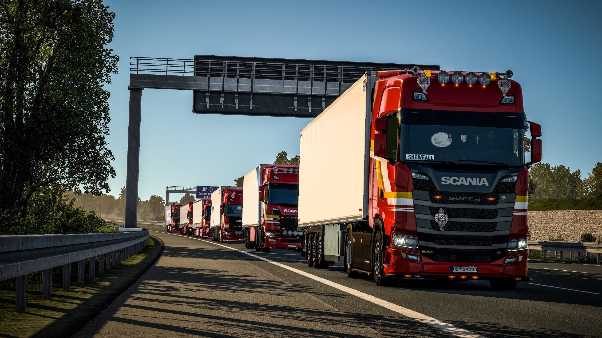
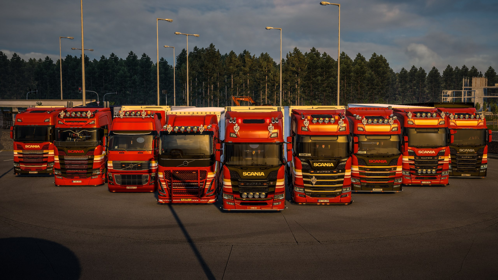
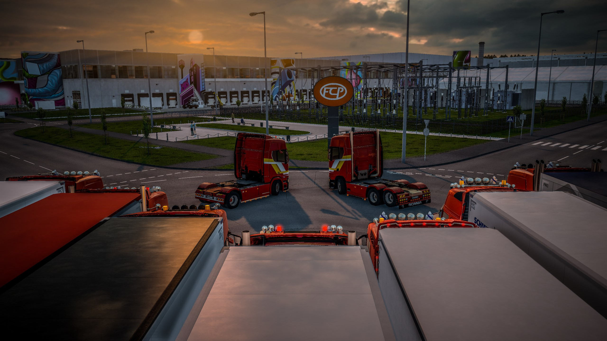
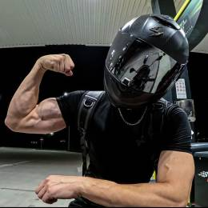
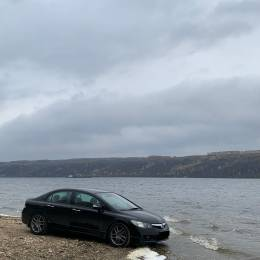

About Vabis Transport
Learn more about our history, values and the people who make our company special

Our history
Vabis Transport was founded by Nikita Ariphe on July 30, 2025 with the goal of creating not just a virtual trucking company, but a true community of like-minded drivers. The name "Vabis" was chosen deliberately — it refers to the history of Swedish automotive engineering and symbolizes reliability and quality.
Over time we have grown into a friendly team that values stylish driving and discipline. Today we hold the status of a Validated VTC on TruckersMP and continue to grow actively by welcoming new drivers aged 15+.
We are proud of our atmosphere of mutual support and respect. We have our own VTC paint job, a custom Discord bot, and a monthly reward system for the best drivers. For us, quality matters more than quantity — every new member becomes part of the big Vabis Transport family.
Our values
Friendly Community
We support each other and create an atmosphere where everyone enjoys being part of the team and growing together.
Stylish Driving
Our Chill Vabis convoys are known for their stylish driving. We are proud of our own VTC paint job.
Ranking System
Career growth based on real mileage. Drive thousands of kilometers and become a professional!
Custom Discord Bot
We use our own Discord bot to automate processes and improve interaction within the community.
Want to join Vabis Transport?
🚚 Vabis Transport | Validated VTC | Driver recruitment 15+
We are always open to new drivers who share our values and want to become
part of a friendly community. Convoys, events, ranking system, Save Edit
and a supportive team — all of this awaits you!
- Age 15+
- TruckersMP account (no more than 4 active bans)
- Minimum TruckersMP account age: 3 months
- Willingness to follow company rules
- Presence in Trucky or TrucksBook is required

DRIVER RESULTS
TRUCKY - OVERALL RANKING

Real miles


TrucksBook


Frequently Asked Questions
When was the company founded?
Vabis Transport was founded by Nikita Ariphe on July 30, 2025. We are now preparing to celebrate our first anniversary!
What convoys do you organize?
We organize Chill Vabis convoys where the main rule is stylish driving. We also host monthly convoys with other VTCs and participate in events organized by other companies.
How does the ranking system work?
The ranking system is based on total mileage tracked through Trucky (main tracker) or TrucksBook. Each member must be present in one of these systems and can progress through the ranks.
What is "Driver of the Month"?
It is a monthly award given to the driver who contributed the most to the life of the VTC.
Do you have a Discord bot?
Yes, we have our own Discord bot that helps automate many processes and improves communication within the community.
Do you have your own paint job?
Yes, our VTC has its own beautiful paint scheme and we are very proud of it!